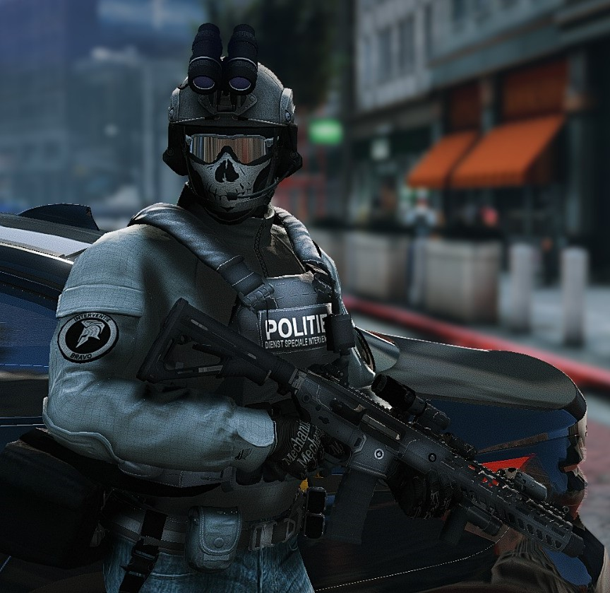
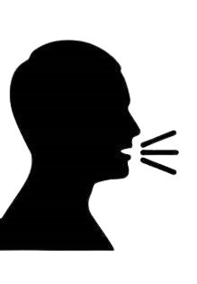

Ryan Nix🔍
16-07-2004⭐
 Ryan's hobby's en lievelings games zijn🎮:
Snowboarden, Skiën en FiveM spelen
Familie👪
Ryan heeft 4 broers👦, een vader 👨, moeder👩, opa👴 & oma👵 en een oom.👱
schoolervaring📚

Brandenberg Middelbaar📖
contact📲
📨ryan.revf@gmail.com
📞0621231090
✅insta: Ryan.hrsfld